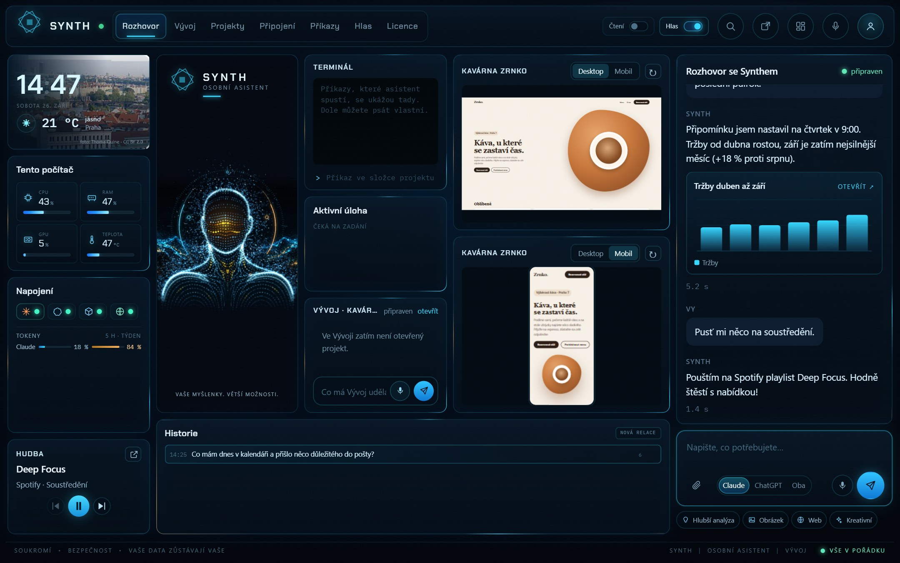

Pošta a kalendář
„Co mi dnes přišlo důležitého?“ Přečte e-maily, shrne je, navrhne odpověď a hlídá schůzky. Gmail a Google Kalendář připojíte jedním kliknutím.
Osobní AI asistent · česky · Windows i Mac
Synth běží přímo na vašem počítači. Přečte a roztřídí poštu, připomene schůzky, postaví web, vyrobí graf a naplánované úkoly udělá sám, i když spíte. Pojmenujete si ho, jak chcete, a mluvíte s ním jako s člověkem.
01Co umí
Najeďte na svítící body a podívejte se, co všechno Synth zvládne z jednoho okna.

02Schopnosti
Synth není chat v prohlížeči. Má ruce: sahá do pošty, kalendáře a souborů a věci opravdu udělá.
„Co mi dnes přišlo důležitého?“ Přečte e-maily, shrne je, navrhne odpověď a hlídá schůzky. Gmail a Google Kalendář připojíte jedním kliknutím.
Každé ráno v 8:00 přehled pošty, v pátek týdenní report. Udělá to sám a výsledek pošle i do mobilu.
Česky, mužským i ženským hlasem. Pozná, kdy domluvíte, a když skočíte do řeči, ztichne.
Jak se jmenuje vaše firma, kdo je účetní, jakou pijete kávu. Paměť zůstává jen u vás v počítači.
Z čísel udělá graf, z popisu obrázek. Obojí si otevřete na celou obrazovku nebo pošlete dál.
Synth běží na vašem počítači. Soubory, e-maily ani paměť nikam neposílá. Spojení s telefonem je šifrované klíčem, který zná jen váš počítač a mobil. Náš server zprávy jen předává a nerozumí jim.
„Pusť něco na soustředění.“ Ovládá Spotify a ví, co zrovna hraje.
Umí Claude i ChatGPT. Když jednomu dojde limit, práci převezme druhý a vy nic neřešíte.
03Připojení
Gmail, Kalendář, Disk, Notion, Jira, Slack, GitHub, Figma, Stripe a další. Připojíte je jedním kliknutím a asistent s nimi rovnou pracuje. Čím víc připojení, tím chytřejší Synth je.
04Weby a aplikace
Záložka Vývoj je jako mít programátora vedle sebe. Řeknete, co chcete, a vidíte, jak píše kód, spouští ho a ukazuje výsledek na počítači i v mobilu.

05V mobilu
Spárujete telefon QR kódem a Synth máte s sebou. Mluvíte s ním, zadáváte práci na počítač doma a dostáváte upozornění, když je hotovo.
06Jak začít
Po zaplacení dostanete e-mailem licenční klíč a odkaz ke stažení pro Windows nebo Mac.
Průvodce se zeptá na klíč a sám najde, na co se napojit: Claude nebo ChatGPT.
Dáte mu jméno a hlas. Od té chvíle je to váš asistent, třeba Viktorka nebo Alfréd.
07Ceník
Všechny balíčky umí úplně všechno. Liší se jen délkou, a čím delší, tím levnější.
Na vyzkoušení
390 Kč měsíčně
Ušetříte 15 %
vychází na 332 Kč měsíčně
Ušetříte 25 %
vychází na 291 Kč měsíčně
Synth přemýšlí přes Claude nebo ChatGPT. Budete potřebovat vlastní předplatné Claude nebo ChatGPT (od 20 $ měsíčně), případně API klíč. Průvodce vám to při instalaci pomůže nastavit.
08Otázky
Počítač s Windows 10/11 nebo macOS a předplatné Claude (Pro nebo Max) nebo ChatGPT (Plus nebo Pro). Místo předplatného jde použít i vlastní API klíč, pak ale asistent jen konverzuje a nepracuje se soubory.
Asistent běží na vašem počítači. E-maily, soubory i paměť čte jen váš počítač. Spojení s telefonem je šifrované klíčem ze spárování a náš server zprávy jen předává, přečíst je nemůže.
Na 2 počítače a ke každému můžete spárovat 2 telefony. Když počítač vyměníte, starý odhlásíte a klíč zadáte na novém.
Ano. Píše i mluví česky, rozumí diktování a jméno si skloňuje podle toho, jak ho pojmenujete.
Vůbec ne. Všechno se nastavuje klikáním a s asistentem mluvíte normálně. Záložka Vývoj je pro ty, kdo si chtějí nechat postavit web nebo aplikaci.
Asistent se zastaví, ale nic se nesmaže. Po prodloužení pokračuje tam, kde skončil, i s pamětí a nastavením.
Ano, přes aplikaci v telefonu, i mimo domácí Wi-Fi. Počítač s asistentem přitom musí běžet.
A nechte ho pracovat za vás.
Vybrat balíček